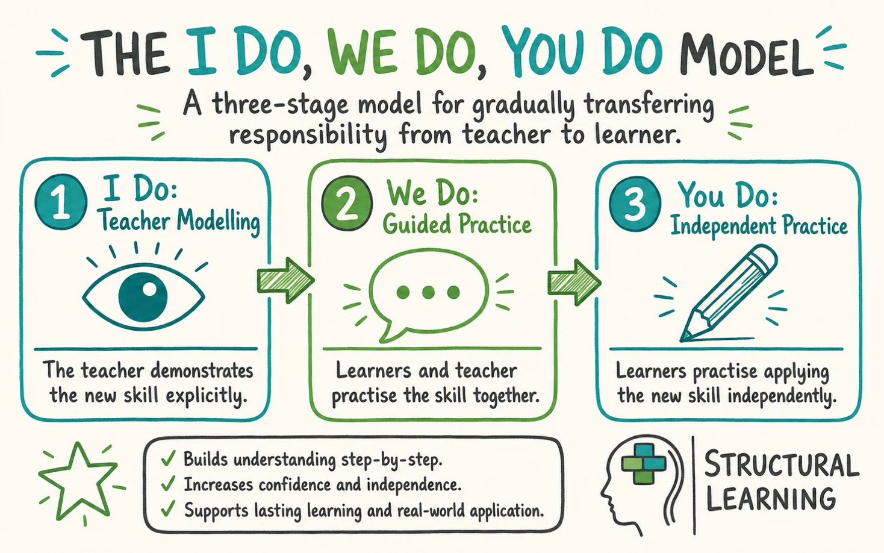

EROP 2026 (June)
Introduction
Welcome to SYAI Labs. This page is the official curriculum of the Early Research Opportunity Program (EROP) organized by the Singapore Youth AI, supported by AI Singapore.
In this page, we provide examples for the learning objectives in this program (see the provided lesson plan). There will be positive and negative examples, as well as specific instances accompanying the “I do, We do, You do” paradigm (for distill knowledge from the mentors). If there are any points/ideas that you are unsure about, do approach your assigned mentors during the program!
Weapons of Mass Disruptions
The AI safety challenges facing us today are not about bombs or missiles. They are about something quieter and, in some ways, more difficult to recover from: the systematic disruption of the structures through which we learn, work, own, and choose. Each of these has been changed — quickly and quietly — by the mass deployment of generative AI systems. This brief invites research into these disruptions, not to resist AI adoption, but to understand what it is actually doing to us and how we can mitigate these risks.
How We Learn
Education has always depended on productive struggle — the formative experience of not knowing, attempting, failing, and revising. This struggle is not a flaw in the learning process; it is the mechanism through which understanding is built. Generative AI, deployed in academic contexts, short-circuits this mechanism with unusual efficiency. For example, a student who prompts a language model to explain a concept, draft an essay, or solve a problem set receives a polished output that superficially resembles mastery. The gap between receiving a correct answer and developing the capacity to produce one is invisible in the final product, but deeply significant in the learner.
The consequences extend beyond beyond learning a skill: assistance from AI also how affects how we maintain our current skills. When AI handles tasks that are easy for us, we risk eroding those very same skills that made the task easy (e.g., writing code). The effects may not surface for years, until a cohort of workers who delegated their formative learning to AI tools is asked to reason, judge, or create without them.
How We Work
The modern workplace has adopted generative AI at a pace that has outrun the governance infrastructure meant to support it. Workers use AI to draft reports, generate analyses, write code, and synthesize information — and the result is a measurable increase in throughput alongside a less visible accumulation of risk. The central hazard is automation bias: the well-documented human tendency to accept algorithmic outputs with less scrutiny than we apply to our own work. When AI produces a polished deliverable, the psychological signal that review is necessary is weaker than when a human writes a rough draft. Errors and hallucinations — confidently stated falsehoods — pass through review because they arrive pre-formatted and fluent.
When those errors cause harm, accountability is difficult to assign. The worker who submitted the deliverable may not have fully understood it. The organisation that deployed the AI tool may not have anticipated the failure mode. Current professional norms and regulatory frameworks do not resolve this cleanly, leaving a gap between the pace of AI adoption and the scaffolding needed to make it safe.
More egregiously, many of these tools now perform many tasks traditionally assigned to entry-level staff, directly competing with human graduates for entry-level positions. As fresh graduates lose hiring opportunities to AI tools, they miss out on training and development opportunities entry level roles traditionally provide. Either that, or they “10x” themselves to appear more competitive which inflates the qualifications for entry-level jobs.
What We Own
Generative AI is trained on the accumulated creative and intellectual output of humanity — books, articles, code, art, music — and produces outputs that synthesise, resemble, and sometimes reproduce that material. This creates an unresolved tension at the heart of intellectual property. Who owns a piece of writing that AI substantially shaped? What obligation exists when a model’s output is indistinguishable from, or directly derived from, a specific human work? When AI absorbs the style and substance of a creator’s life work and reproduces it at industrial scale, something has been taken — but our current frameworks struggle to name what, and from whom.
These are not purely legal questions. They concern the incentive structures that make creative and intellectual effort worthwhile in the first place. If the fruits of sustained human knowledge production can be harvested and reproduced by a model without attribution or compensation, the social contract that sustains original work — in art, research, journalism, and beyond — is quietly undermined.
What We Consume
The information ecosystem has changed more rapidly than any other domain. AI systems now generate text, images, audio, and video at a scale and quality that makes synthetic content difficult to distinguish from content produced by humans. Recommendation algorithms — themselves AI systems — shape what reaches audiences, amplifying engaging content regardless of its veracity and narrowing the informational worlds that individuals inhabit. The compounding effect is an environment in which the provenance of information is systematically obscured.
A reader encountering a well-written article, an apparently authentic photograph, or a confident-sounding voice recording has a diminishing ability to determine whether it reflects a human perspective, a synthetic one, or something in between. The problem is not that any single piece of content is false. It is that the baseline assumption of authenticity — on which trust in information has always depended — has been quietly destabilised. Once trust erodes, it is very difficult to rebuild.
Deliverables
Both artefacts are due on Day 5 of the programme.
Research Proposal (max 3 pages)
Each team submits an actionable written proposal identifying a specific AI safety concern arising from one of the disruptions described above. The proposal should include a clear problem statement scoped to a particular domain, a proposed methodology for investigating or addressing it, and a discussion of expected outcomes and limitations. Proposals must engage with prior work.
Research Poster (91 cm H × 150 cm W)
Each team presents a poster summarising their research proposal. The poster should communicate the problem, the approach, and the anticipated contribution clearly enough to be understood by a reader who has not read the proposal. Visual clarity and concision are as important as technical depth.
Pre-Survey
Before the program begins, both mentees and mentors complete a short self-assessment to establish a baseline for the end-of-programme evaluation. The link will be shared by the program coordinators on the day.
What is this for?: We will be using these self-assessments as a signal to assess how well this program has helped you! Thank you for taking your time to fill up this form 🙇🏻
Pre-Programme Self-Assessment Form (link to be added by coordinators)
Research Brief
Each team unpacks the research brief together. The goal is to surface both explicit constraints (things the brief directly states) and implicit constraints (things the brief implies but does not state).
The EROP research brief is in the Research Brief tab. Read through it before working through the examples below.
The worked example below uses a separate illustrative brief on health misinformation — a different domain, deliberately chosen so you can practice the skill before applying it to your own brief.
Brief: AI-Assisted Detection of Health Misinformation in Online Communities
Background: Health misinformation spreads rapidly on social media platforms and online forums. Singaporean health authorities are interested in scalable tools that can assist human moderators in identifying potentially misleading health claims in English and Singlish user-generated content.
Task: Develop or evaluate an AI-based approach to detect health misinformation in short-form text (e.g., forum posts and social media comments up to 280 characters). The solution must be explainable — moderators must understand why a piece of content was flagged.
Resources: The team has access to publicly available English health misinformation datasets. Any approach using local Singapore data must comply with PDPA. The solution must be evaluable within a 5-week research sprint.
Identifying Constraints
The first task is to separate what is stated from what is implied.
Step 1 — Extract explicit constraints
Go through the brief sentence by sentence and pull out anything that directly limits what can be done.
| Constraint | Source in the brief |
|---|---|
| Short-form text only (≤ 280 chars) | “short-form text … up to 280 characters” |
| Explainability is required | “The solution must be explainable” |
| English and Singlish text | “English and Singlish user-generated content” |
| 5-week timeline | “5-week research sprint” |
| PDPA compliance for any local data | “must comply with PDPA” |
| Only publicly available datasets (unless PDPA-compliant) | “access to publicly available English … datasets” |
Step 2 — Infer implicit constraints
These take more thought. For each explicit constraint, ask: what does this actually mean in practice?
Singlish adds NLP complexity. Most pre-trained language models are trained on standard English. Singlish — a local creole mixing English with Malay, Hokkien, and Tamil — is underrepresented in standard NLP benchmarks. We cannot assume off-the-shelf models will transfer well.
Health domain implies a high precision bar. The brief does not say this, but flagging a correct health claim as misinformation (a false positive) could erode public trust. We should be conservative about what we flag.
“Evaluable in 5 weeks” rules out training from scratch. We likely do not have time to collect new data and pre-train a new model. Fine-tuning or prompting an existing model is more realistic given our constraints.
“Assist human moderators” implies human-in-the-loop. The system is not expected to be fully autonomous — it is a triage support tool. This relaxes some accuracy requirements, but adds a new question: what information does the moderator actually need to make a decision?
Step 3 — Note what to emphasise in a problem statement
From this exercise, these points are worth foregrounding:
- The Singlish challenge is distinctive and under-studied — it is a non-obvious constraint that motivates why existing work may not apply.
- The explainability requirement creates a genuine research tension (the most accurate models are often the least interpretable).
- The human-in-the-loop framing should shape how we define “success” — accuracy alone is not enough.
Apply these three steps to the actual research brief in the Research Brief tab. As a team, produce:
- A table of explicit constraints with their source in the brief.
- A numbered list of implicit constraints, each with a brief justification.
- Two or three points you would want to foreground in a problem statement, and why.
Problem Statement Exploration
What is a problem statement in AI research?
A problem statement answers three questions in one or two paragraphs:
- What gap exists? — the unsolved problem or underexplored area.
- Why does it matter? — the real-world or scientific motivation.
- What direction are you taking? — a high-level indication of your research approach.
A problem statement is not a solution statement. It does not say “we will build X.” It says “Y is a challenge because of Z, and addressing Z matters because of W.”
Generating Problem Angles
Starting from the research brief above, here are two distinct angles that could serve as a starting point for team discussion.
Angle 1 — Singlish-aware misinformation detection
Most existing health misinformation classifiers are trained on standard English and may not generalise to Singlish text. The research question becomes: how well do existing models generalise to Singlish, and can we adapt them within our constraints?
Angle 2 — Explainability for health moderators
Even an accurate classifier is unhelpful if a moderator cannot interpret its output. The research question becomes: what explanation format is most actionable for a moderator reviewing flagged health content?
These are a starting point, not an exhaustive list. The team should interrogate whether these angles are distinct enough, and whether one is more tractable given the constraints identified earlier.
Drafting a Problem Statement
Here is a draft problem statement for Angle 1. Read through it first; the decisions behind it are unpacked below.
Online health misinformation poses a growing public health challenge in Singapore, where online communities frequently mix standard English with Singlish — a local creole not well-represented in existing NLP benchmarks. Most health misinformation detection models are trained on English-only corpora and may not generalise reliably to this code-mixed context, leaving human moderators without dependable AI support on Singapore-facing platforms. This project investigates the extent to which pre-trained language models can be adapted for Singlish health misinformation detection under constrained data and compute budgets, using cross-lingual transfer and lightweight fine-tuning as candidate approaches.
A few things to notice about this draft:
- It names the specific gap. It does not say “misinformation is a problem” (too broad). It says that existing models do not cover Singlish specifically (concrete).
- It does not commit to a solution. It says “investigates … using X as candidate approaches” — the project may find that those approaches do not work, and that would still be a valid research outcome.
- It connects the technical gap to the real-world motivation. Singlish underrepresentation is a technical fact; “leaving moderators without dependable AI support” is the human consequence. Both belong in a problem statement.
- It is specific about scope. “Constrained data and compute budgets” directly reflects the 5-week timeline constraint we identified earlier.
Using the constraints you identified from the EROP research brief, generate two distinct problem angles as a team. For each angle, write one or two sentences framing the core research question. Then, as a team, select one angle and draft a 100–150 word problem statement following the structure above.
The goal of Day 2 is to map the research landscape around your problem statement: what has already been done, what the open problems are, and which papers are worth reading closely. The examples below continue with the illustrative health misinformation brief from Day 1.
Daily Recap
Before searching, the team revisits yesterday’s problem statement and splits the literature search across sub-areas. This avoids three people independently finding the same survey paper while an entire sub-area goes unexamined.
For the Singlish health misinformation angle, a sensible split might be:
| Sub-area | Why it matters to the problem |
|---|---|
| Misinformation / fake-news detection | The core task — what methods exist, what they achieve |
| Code-mixed and low-resource NLP | Directly addresses the Singlish constraint |
| Explainability in text classification | Addresses the explainability requirement from the brief |
Each member takes a sub-area, and the team agrees to bring back a small number of high-quality sources rather than a long undifferentiated list.
Information Gathering: Surveying Existing Work
Deep Research features (in ChatGPT, Claude, Gemini, and similar tools) can produce a fast first map of a field. They are a starting point, not a substitute for reading. Two failure modes matter most for new researchers:
- Hallucinated or mis-attributed citations. A tool may invent a plausible-sounding paper, or attribute a real finding to the wrong authors or venue. Every source must be independently verified before it enters your bibliography.
- Confident but shallow synthesis. The summary may smooth over disagreements in the literature or miss the most important recent work. Treat the output as a set of leads to investigate, not as settled conclusions.
Writing a good Deep Research prompt
A vague prompt (“tell me about misinformation detection”) returns a vague survey. A good prompt encodes your problem statement, your constraints, and what you want back.
I am researching the detection of health misinformation in code-mixed English–Singlish short text (social media posts). I want to understand the existing research landscape.
Please find and summarise:
- Key approaches to health misinformation / fake-news detection in short text, with a focus on explainable methods.
- Work on code-mixed or low-resource NLP, especially for English mixed with Southeast Asian languages.
- For each work: the venue, the year, the core method, and its main limitation.
Prioritise peer-reviewed papers from reputable venues (e.g., ACL, EMNLP, NAACL, ICML, ICLR). Include links or DOIs so I can verify each source. Flag where the evidence is thin or where you are uncertain.
Notice what the prompt does: it states the problem precisely, names the constraints (code-mixed, explainable, short text), asks for verifiable metadata (venue, year, link), and explicitly invites the tool to flag uncertainty.
Don’t trust the models (for now)
Below is an example of a hallucinated reference produced by Deep Research (02/Jun/2026).

Be very very careful on the listed paper. The model can not only hallucinate a paper that doesn’t exist, but also where it is published! In other cases, the paper could simply be on arxiv, but not published yet! To be more confident in our sources, we manually verify them!
Triaging the output
Suppose the tool returns eight sources. The skill is deciding what to read first and what to set aside — and being able to say why. A useful triage runs along these lines:
- Read first — a paper from a top venue (e.g., ACL/EMNLP), recent (last 2–3 years), directly on code-mixed misinformation. High relevance, high credibility: this is the closest prior work.
- Read soon — a well-cited survey of explainable text classification. Not specific to your domain, but it frames the explainability landscape and its references are a map to follow.
- Skim / park — a paper on misinformation detection that is from a strong venue but English-only and not explainable. Useful as a baseline method, but does not address two of your core constraints.
- Filter out — a source with no identifiable venue, no link, or one you cannot locate when you search for it. If you cannot verify it exists, it does not enter the bibliography.
The point of articulating the reasoning is that it forces the criteria into the open: relevance to the problem statement, credibility of the venue, recency, and whether the work addresses your specific constraints.
Using your EROP problem statement, write a Deep Research prompt following the structure above. Run it, then triage the results into “read first / read soon / skim / filter out.” For each source you flag for the team, write one sentence on why it earned that ranking.
Academic Literature Search
Deep Research gives you leads. Google Scholar is where you verify them and follow the citation trail yourself. The first move with any AI-suggested source is always: find the real paper. Search the exact title in Google Scholar and confirm the authors, venue, and year match what the tool claimed.

Practical Tips!
- “Cited by N” — every result lists how many later papers cite it. Clicking this shows you forward citations: newer work that built on this paper. This is the single most useful way to get from a foundational paper to the current state of the art.
- “Related articles” — surfaces papers Scholar judges topically similar; good for widening a sub-area. You can also consider using Connected Papers for this!
- Cite → BibTeX — exports a clean citation for your bibliography (but always sanity-check the venue and year).
- Filter by year (left sidebar) — restrict to recent work to see where a field is now, or to find the seminal older papers when sorted differently.
- The right-hand link — often a
[PDF]from the publisher, arXiv, or an author’s page, letting you reach the full text.
Citation count signals influence but is biased toward older papers — a strong 2024 paper will not yet have many citations. Weigh the venue (is it a recognised peer-reviewed conference or journal?), the recency, and most importantly the fit to your problem. A modestly-cited paper that targets your exact sub-problem can be more valuable than a famous paper that is only loosely related.
Synthesising findings
The output of this session is not a pile of PDFs; it is a small set of synthesised points that connect the literature back to your problem statement. Three useful kinds of point:
- Existing work — “Approach X is the standard method for short-text misinformation detection, achieving Y on benchmark Z.”
- A limitation or gap — “These models are trained and evaluated almost entirely on monolingual English; code-mixed performance is largely unstudied.”
- A convention of the subfield — “Explainability in this area is typically evaluated by attention-weight visualisation or token-attribution methods, which have known reliability caveats.”
Each point should be traceable to a specific source, so that the claim can be checked.
Annotating a source
The day’s artifact is an annotated bibliography. A good annotation is short but captures relevance and judgement, not just a summary:
Author(s) (Year). Title. Venue. [link/DOI]
- What it does: proposes a transformer-based classifier for short-text misinformation with token-level attribution for explainability.
- Why it’s relevant: directly addresses two of our constraints (short text + explainability); a strong candidate baseline.
- Limitation for us: English-only; no evaluation on code-mixed text, which is exactly our gap.
- Follow-ups (via “Cited by”): two 2024 papers extend this to multilingual settings — worth reading next.
Take one source you flagged from your Deep Research survey. Find it on Google Scholar, confirm its venue and year, and click “Cited by” to find one more recent paper that builds on it. Write an annotated bibliography entry for each, following the format above. As a team, consolidate everyone’s entries and identify the three synthesised points most relevant to your problem statement.
TBA
TBA
TBA
EROP Mentoring Strategy
One key outcome we hope to see from this site is to help budding AI researchers become more independent in their work. While we provide materials (for writing or reading academic papers) to help them get started, we also try to incorporate a form of knowledge distillation in the EROP from more experienced researchers (grad students). Much of academia rely on mentorships — either from more senior PhD students in a research group, or directly from professors (PIs). In documenting the mentoring strategy, we hope that the mentors too could benefit from this program!
Overview

I Do — The mentors demonstrate
The mentor demonstrates the skill or process while thinking aloud. Students observe and note down questions that they might have.
Example: > The mentor reads an AI research paper aloud, narrating the decisions they make > as they skim the abstract, identify the key contribution, and assess > experimental validity.
The main objective here is to elucidate the mentor’s thought process in the activity (e.g., reading papers, drawing diagrams, and drafting the proposal). After the initial demonstration, we encourage mentees to ask questions regarding why the mentor did xyz in that activity. The goal is to understand the approach, not to imitate.
We Do — Both mentors and mentees practice together
The mentor and student work through a task together. The student takes the lead; the mentor provides real-time prompts and feedback.
Example: > The student reads a new paper while the mentor asks guiding questions: > “What problem is this solving?”, “What baseline did they compare against?”, > “Would this method work in a different domain?”
You Do — The mentees practice independently
The student completes the task independently and presents their work. The mentor reviews and gives structured feedback afterward.
Example: > The student independently reads and summarises three papers from a reading list, > then presents a brief synthesis to the mentor in the next meeting.
Resources
- Reading Advice — advice on reading research papers
- Writing Advice — advice on academic writing